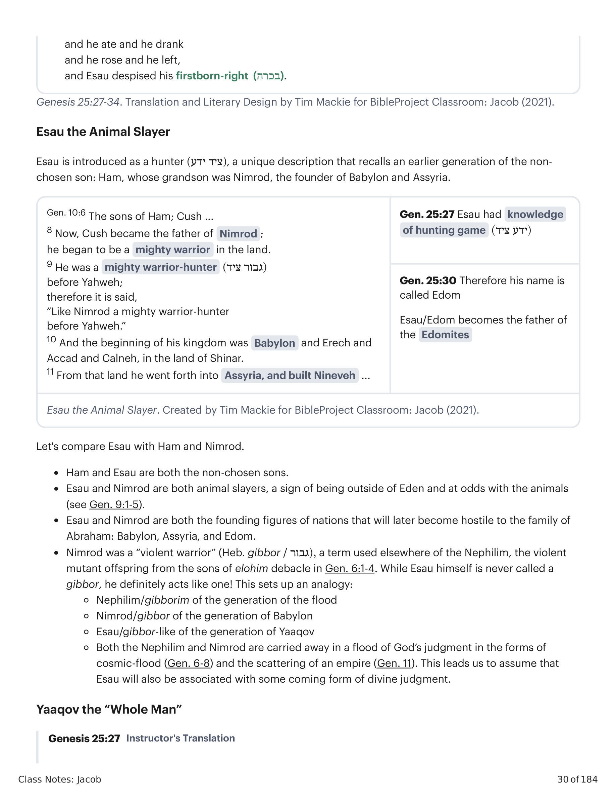
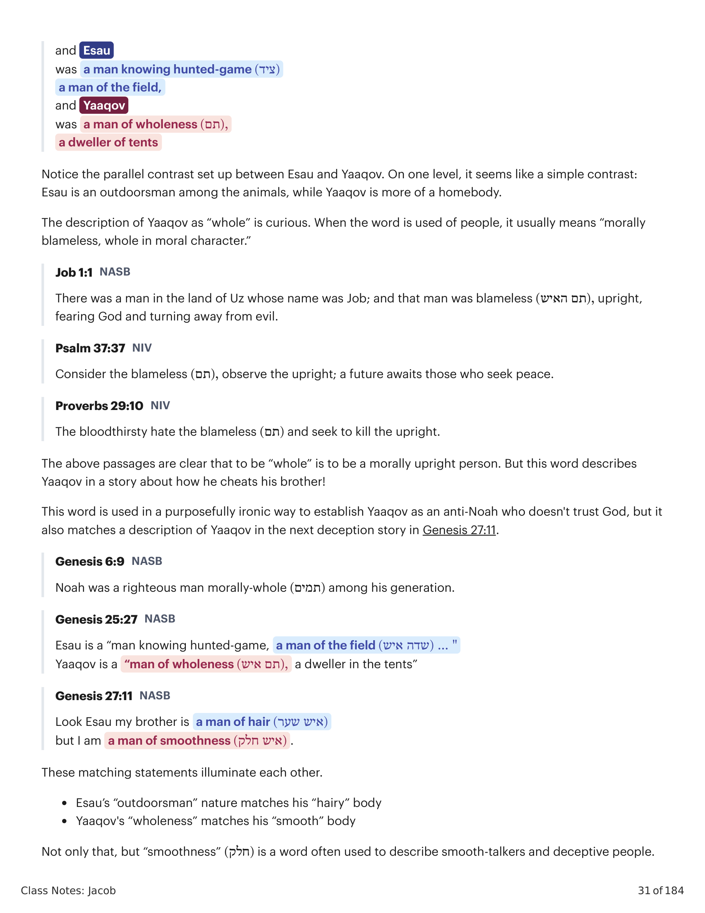
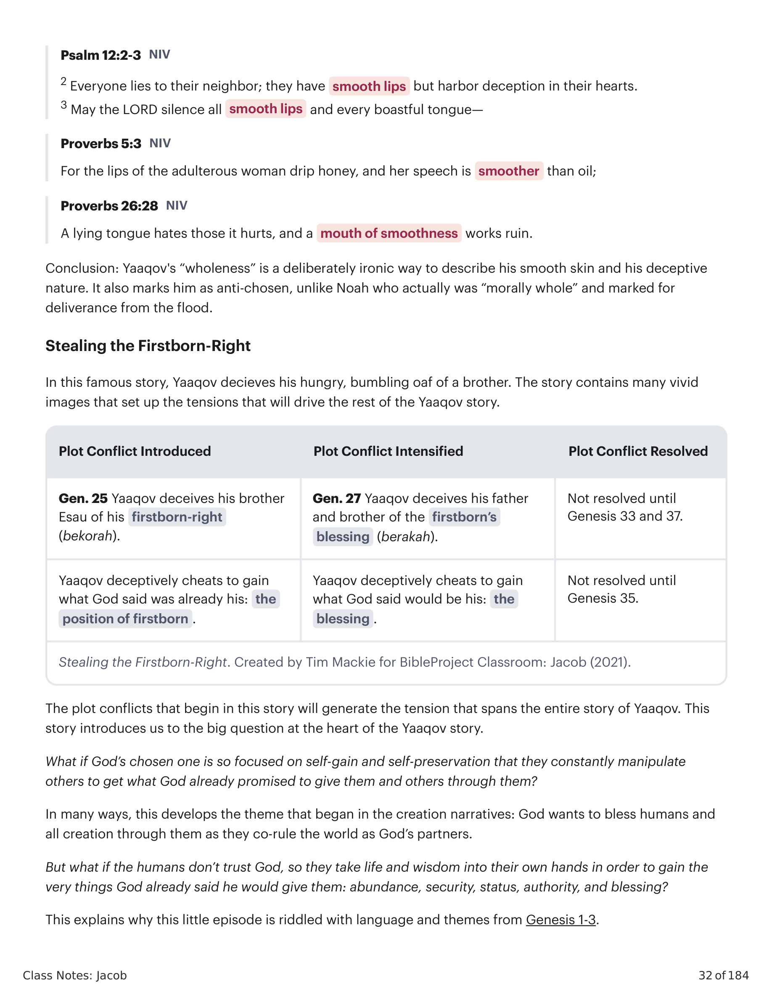
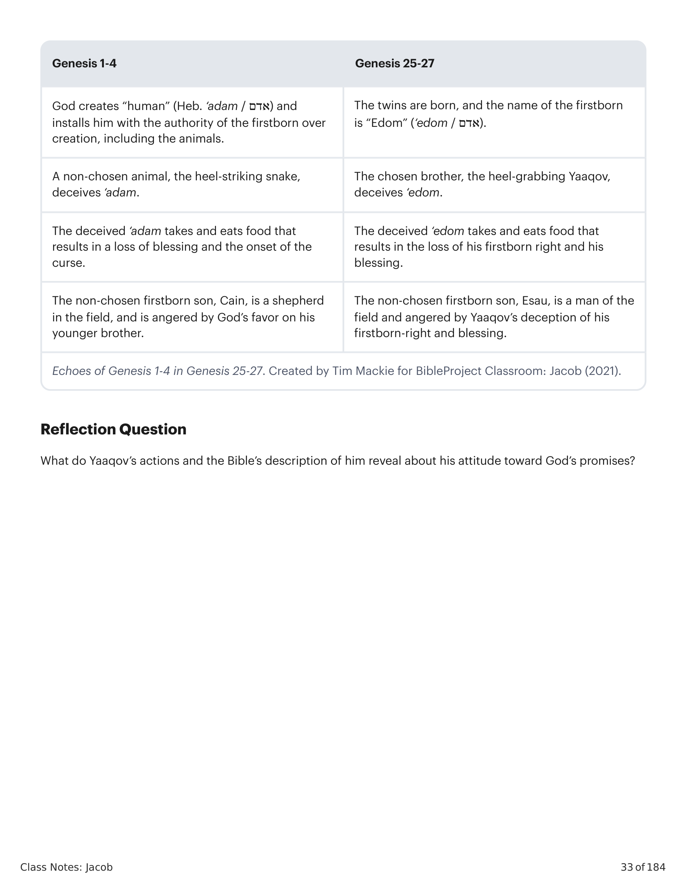

27 E os meninos cresceram, e Esaú era um homem que tinha conhecimento de caça (ציד), um homem do campo, e Yaaqov era um homem de integridade (תם), um habitante de tendas. 28 E Yitskhaq amava Esaú, porque a caça (ציד) estava em sua boca, e Rivqah amava Yaaqov. 29 E Yaaqov ferveu um ensopado (נזיד), e Esaú entrou vindo do campo, e ele estava exausto; 30 e Esaú disse a Yaaqov: "Por favor, deixa-me engolir aquele vermelho, vermelho, pois estou exausto." Portanto seu nome foi chamado Edom / vermelho (אדום). 31 E ele disse: "Hoje, vende-me teu direito de primogenitura (בכרה)." 32 E Esaú disse: "Eis que estou para morrer; que me importa (למה זה) um direito de primogenitura (בכרה)?" 33 E Yaaqov disse: "Hoje, jura-me um juramento," e assim ele lhe jurou, e vendeu seu direito de primogenitura (בכרה) a Yaaqov. 34 E Yaaqov deu a Esaú pão e ensopado (נזיד) de lentilhas; e ele comeu e bebeu e levantou-se e foi embora, e Esaú desprezou seu direito de primogenitura (בכרה).27 And the boys grew up, and Esau was a man having knowledge of hunted-game (ציד), a man of the field, and Yaaqov was a man of wholeness (תם), a dweller of tents. 28 And Yitskhaq loved Esau, because hunted-game (ציד) was in his mouth, and Rivqah loved Yaaqov. 29 And Yaaqov stewed a stew (נזיד), and Esau came in from the field, and he was faint; 30 and Esau said to Yaaqov, "Please let me swallow that red red, for I am faint." Therefore his name was called Edom / red (אדום). 31 And he said, "Today, sell me your firstborn-right (בכרה)." 32 And Esau said, "Look, I am going to die; what is this (למה זה) to me, a firstborn-right (בכרה)?" 33 And Yaaqov said, "Today, swear an oath to me," and so he swore an oath to him, and he sold his firstborn-right (בכרה) to Yaaqov. 34 And Yaaqov gave to Esau bread and stew (נזיד) of lentil beans; and he ate and he drank and he rose and he left, and Esau despised his firstborn-right (בכרה).
Esaú é introduzido como um caçador (ציד ידע), uma descrição única que recorda uma geração anterior do filho não-escolhido: Ham, cujo neto foi Nimrode, o fundador da Babilônia e da Assíria. Compare Esaú com Ham e Nimrode: ambos são filhos não-escolhidos; ambos são matadores de animais, sinal de estar fora do Éden e em conflito com os animais (veja Gn 9:1-5); ambos são figuras fundadoras de nações que mais tarde se tornarão hostis à família de Abraão: Babilônia, Assíria e Edom. Nimrode era um "guerreiro violento" (heb. gibbor, גבור), termo usado em outro lugar dos Nephilim, a prole mutante e violenta do debacle dos filhos de elohim em Gn 6:1-4. Embora Esaú nunca seja chamado de gibbor, ele definitivamente age como um!Esau is introduced as a hunter (ציד ידע), a unique description that recalls an earlier generation of the non-chosen son: Ham, whose grandson was Nimrod, the founder of Babylon and Assyria. Compare Esau with Ham and Nimrod: both are the non-chosen sons; both are animal slayers, a sign of being outside of Eden and at odds with the animals (see Gen. 9:1-5); both are the founding figures of nations that will later become hostile to the family of Abraham: Babylon, Assyria, and Edom. Nimrod was a "violent warrior" (Heb. gibbor, גבור), a term used elsewhere of the Nephilim, the violent mutant offspring from the sons of elohim debacle in Gen. 6:1-4. While Esau himself is never called a gibbor, he definitely acts like one!

Esaú, o Matador de Animais. Criado por Tim Mackie para BibleProject Classroom: Jacó (2021).Esau the Animal Slayer. Created by Tim Mackie for BibleProject Classroom: Jacob (2021).
Observe o contraste paralelo estabelecido entre Esaú e Yaaqov. Em um nível, parece um contraste simples: Esaú é um homem das redondezas entre os animais, enquanto Yaaqov é mais caseiro. A descrição de Yaaqov como "íntegro" é curiosa. Quando a palavra é usada de pessoas, geralmente significa "moralmente irrepreensível, íntegro em caráter moral" (veja Jó 1:1; Sl 37:37; Pv 29:10). Mas esta palavra descreve Yaaqov em uma história sobre como ele engana seu irmão! Esta palavra é usada de forma propositalmente irônica para estabelecer Yaaqov como um anti-Noé que não confia em Deus, mas também combina com a descrição de Yaaqov na próxima história de engano em Gênesis 27:11.Notice the parallel contrast set up between Esau and Yaaqov. On one level, it seems like a simple contrast: Esau is an outdoorsman among the animals, while Yaaqov is more of a homebody. The description of Yaaqov as "whole" is curious. When the word is used of people, it usually means "morally blameless, whole in moral character" (see Job 1:1; Ps 37:37; Prov 29:10). But this word describes Yaaqov in a story about how he cheats his brother! This word is used in a purposefully ironic way to establish Yaaqov as an anti-Noah who doesn't trust God, but it also matches a description of Yaaqov in the next deception story in Genesis 27:11.

Gênesis 25:27. Tradução e Design Literário por Tim Mackie para BibleProject Classroom: Jacó (2021).Genesis 25:27. Translation and Literary Design by Tim Mackie for BibleProject Classroom: Jacob (2021).
Não apenas isso, mas "lisura" (חלק) é uma palavra frequentemente usada para descrever pessoas de fala mansa e enganosas (veja Sl 12:2-3; Pv 5:3; Pv 26:28). Conclusão: a "integridade" de Yaaqov é uma forma deliberadamente irônica de descrever sua pele lisa e sua natureza enganosa. Isso também o marca como anti-escolhido, ao contrário de Noé, que realmente era "moralmente íntegro" e marcado para a livração do dilúvio.Not only that, but "smoothness" (חלק) is a word often used to describe smooth-talkers and deceptive people (see Ps 12:2-3; Prov 5:3; Prov 26:28). Conclusion: Yaaqov's "wholeness" is a deliberately ironic way to describe his smooth skin and his deceptive nature. It also marks him as anti-chosen, unlike Noah who actually was "morally whole" and marked for deliverance from the flood.
Nesta famosa história, Yaaqov engana seu irmão faminto e desajeitado. A história contém muitas imagens vívidas que estabelecem as tensões que impulsionarão o resto da história de Yaaqov. O conflito da trama que começa nesta história gerará a tensão que abrange toda a história de Yaaqov e introduz a grande questão no coração da história de Yaaqov: E se o escolhido de Deus estiver tão focado em ganho próprio e autopreservação que manipula constantemente os outros para obter o que Deus já prometeu dar a ele e aos outros através dele?In this famous story, Yaaqov decieves his hungry, bumbling oaf of a brother. The story contains many vivid images that set up the tensions that will drive the rest of the Yaaqov story. The plot conflict that begins in this story will generate the tension that spans the entire story of Yaaqov. This story introduces us to the big question at the heart of the Yaaqov story: What if God's chosen one is so focused on self-gain and self-preservation that they constantly manipulate others to get what God already promised to give them and others through them?

Roubando o Direito de Primogenitura. Criado por Tim Mackie para BibleProject Classroom: Jacó (2021).Stealing the Firstborn-Right. Created by Tim Mackie for BibleProject Classroom: Jacob (2021).
Isso explica por que este pequeno episódio está repleto de linguagem e temas de Gênesis 1-3.This explains why this little episode is riddled with language and themes from Genesis 1-3.

Ecos de Gênesis 1-4 em Gênesis 25-27. Criado por Tim Mackie para BibleProject Classroom: Jacó (2021).Echoes of Genesis 1-4 in Genesis 25-27. Created by Tim Mackie for BibleProject Classroom: Jacob (2021).
O que as ações de Yaaqov e a descrição dele na Bíblia revelam sobre sua atitude em relação às promessas de Deus?What do Yaaqov's actions and the Bible's description of him reveal about his attitude toward God's promises?